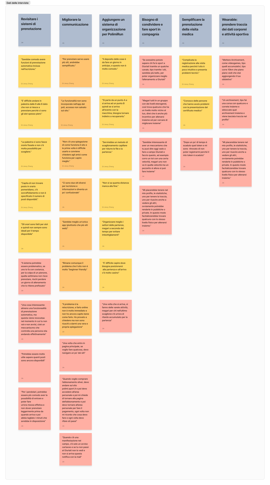

Bisogni degli utenti

Brainstorming sulla selezione dei bisogni
Visualizza meglio l'immagine

| 1 - | Domande chiuse che permettevano di esprimere quanto gli utenti si ritrovavano d’accordo o meno con affermazioni dette da altre persone durante le interviste. |
| 2 - | Domande aperte attraverso le quali gli utenti potevano esprimersi su problemi che non erano sorti nelle interviste. |
Durante la lettura delle domande aperte non sono sorti notevoli problemi di cui il gruppo non era a conoscenza, quindi queste risposte non hanno influito con l’avanzare del progetto.
Per analizzare le risposte chiuse è stato attribuito a ogni risposta un valore da 1 a 5 in base a quanto una persona era d’accordo con una data affermazione. In seguito è stata calcolata la media, la moda e la mediana di ogni affermazione in modo da trovare con metodo oggettivo le affermazioni che gli utenti consideravano “più vere”.
Attraverso l’analisi del spiegata prima sono sorte 11 affermazioni principali, espresse nei seguenti concetti:
1 - Marco: Studente Dual Career e frequentatore del Giuriati;
2 - Giacomo: Studente che usa la pista del Giuriati;
1 - Conferma risultati sondaggio:
Abbiamo chiesto ai partecipanti di confermare i problemi/bisogni/temi che sono emersi con maggior evidenza durante la fase del sondaggio.
2 - Approfondimento riguardo ai bisogni degli utenti:
Abbiamo indagato ulteriormente in relazione ai bisogni degli utenti riguardo al sistema di prenotazione del centro sportivo Giuriati.
3 - Fase "Creativa":
Chiedendo agli utenti se praticano sport con amici o altre domande simili abbiamo aperto una strada verso una nuova possibile funzionalità creativa.
4 - Altri bisogni:
Abbiamo chiesto agli utenti se hanno altri fatti da condividerci di cui non eravamo a conoscenza
“Allenati, Monitora, Condividi”